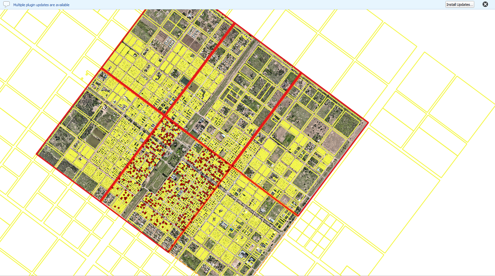
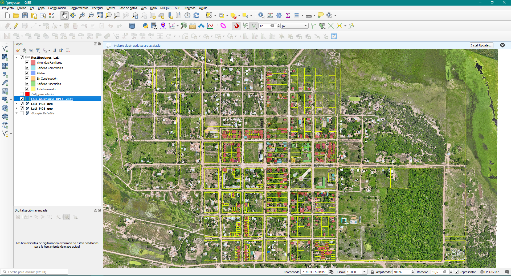
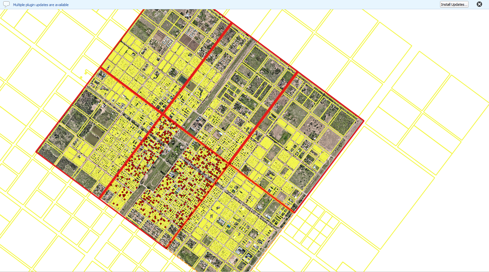
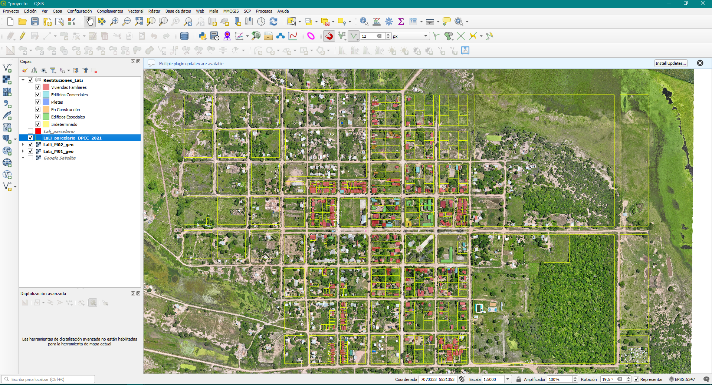

GEORREFERENCIACION, GESTION Y ACTUALIZACIÓN CATASTRAL
Consejo Federal de Inversiones (CFI) - Municipios del Chaco
Etapa 1 | Procesamiento de Ortomosaicos VANT: Georreferenciación de las imágenes aéreas vinculándolas al Catastro Provincial del Chaco mediante puntos de control. Se realiza el proceso de corte y solape para generar un único mosaico continuo, preciso y ajustado.
Etapa 2 | Actualización de la Base Catastral: Digitalización y georreferenciación de la documentación municipal (planos de agrimensura, archivos CAD, PDFs y escaneos). Con esta información se actualizan los registros digitales, unificando los antecedentes con la cartografía actual.
Etapa 3 | Restitución Edilicia y Clasificación de Usos: Detección y dibujo de las superficies construidas sobre el terreno. Se clasifican las edificaciones según su uso, proporcionando al municipio la situación real del territorio para la correcta liquidación de tasas e impuestos inmobiliarios.

Software y tecnologías: QGIS, AutoCAD, CivilCAD, GlobalMapper.

Datasets: Ortomosaicos VANT, Cartografía Catastral (Chaco), Antecedentes Municipales (CAD/PDF), Capas Vectoriales de Restitución.

Localidades: Colonia Popular, Coronel Du Graty, Fontana, Concepcion del Bermejo.